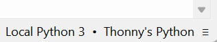

Getting Started with PicoCore
This guide helps you set up PicoCore from scratch, flash your board, and run your first program. It assumes you are using Raspberry Pi Pico or Pico W.
Installation & Setup
1. Download PicoCore release
- Go to the releases page.
- Download the latest
.zipor.7zarchive. -
Inside the archive you will usually find:
-
README.mdorinstructions.txt - precompiled
.mpylibraries (the PicoCore API/runtime) - a matching MicroPython
.uf2firmware file (sometimes) - some sort of hello world project in form of a
boot.pyandmain.py
2. Flash MicroPython firmware
Tip: BOOTSEL mode
To enter bootloader mode, hold BOOTSEL on your Pico/Pico W and plug it into your PC.
- Your board will mount as a RPI-RP2 drive.
-
Copy the
.uf2firmware file onto it.-
If no
.uf2is included in the release, check the version in the.versionfile (highlited line) inside thecorefolder and download from micropython.org.
-
-
The board will reboot automatically and unmount.
3. Copy PicoCore runtime
-
Open Thonny
If not installed go get it on thonny.org
It should look something like this -
Select Interpreter
-
In the bottom right corner of the Thonny window, you will see the interpreter used to run the code you write in Thonny.
-
By default, Thonny uses the interpreter on the ‘Local’ computer (the one running Thonny).
 Click the Python interpreter and select MicroPython. Check if it worked
- Make sure that your Raspberry Pi Pico is connected to your computer and you have selected the MicroPython (Raspberry Pi Pico) interpreter.
- Look at the Shell panel at the bottom of the Thonny editor.

You should see something like this. -
-
Enable File View

Click View in the top left corner and then Files in the dropdown list -
Copy a folder to the device
Right-click core and select Upload to /
-
Install mpremote
-
Check available ports
-
Copy a folder to the device
<your-port>could beCOM13and<your-folder>is usually./core.The:represents the root destination folder.- More usage Info can be found on pypi.org
Disclaimer: No helper script there yet.
4. Verify installation
Open a REPL and test:
✅ If you see a version string, PicoCore is working.
First Program
Let’s blink the onboard LED using PicoCore APIs.
from core.gpio import LED
import time
led = LED()
for i in range(5):
led.on()
time.sleep(0.5)
led.off()
time.sleep(0.5)
If the LED blinks five times, your setup is correct.
Congratulations!
You have successfully installed and tested PicoCore.
Configuration
PicoCore can be customized via config.toml.
See the Configuration Guide for details.
Version differences
Different PicoCore releases may ship with slightly different config.toml defaults. Always check the README in your release archive.
External Resources
- MicroPython Documentation
- Thonny IDE
- mpremote tool
- Raspberry Pi Pico Datasheet
- Getting Started Guide
What’s Next?
- Learn about Services and Tasks
- Configure PicoCore with conf.toml